Welcome
This tutorial will teach you how to customize the look and feel of your plots. You will learn how to:
- Zoom in on areas of interest
- Add labels and annotations to your plots
- Change the appearance of your plot with a theme
- Use scales to select custom color palettes
- Modify the labels, title, and position of legends
The tutorial is adapted from R for Data Science by Hadley Wickham and Garrett Grolemund, published by O’Reilly Media, Inc., 2016, ISBN: 9781491910399. You can purchase the book at shop.oreilly.com.
The tutorial uses the ggplot2, dplyr, scales, ggthemes, and viridis packages, which have been pre-loaded for your convenience.
Zooming
In the previous tutorials, you learned how to visualize data with graphs. Now let’s look at how to customize the look and feel of your graphs. To do that we will need to begin with a graph that we can customize.
Review 1 - Make a plot
In the chunk below, make a plot that uses boxplots to display the
relationship between the cut and price
variables from the diamonds dataset.
ggplot(diamonds) +
geom_boxplot(mapping = aes(x = cut, y = price))Storing plots
Since we want to use this plot again later, let’s go ahead and save it.
p <- ggplot(diamonds) +
geom_boxplot(mapping = aes(x = cut, y = price))Now whenever you call p, R will draw your plot. Try it
and see.
pSurprise?
Our plot shows something surprising: when you group diamonds by cut, the worst cut diamonds have the highest median price. It’s a little hard to see in the plot, but you can verify it with some data manipulation.
diamonds %>%
group_by(cut) %>%
summarise(median = median(price))Zoom
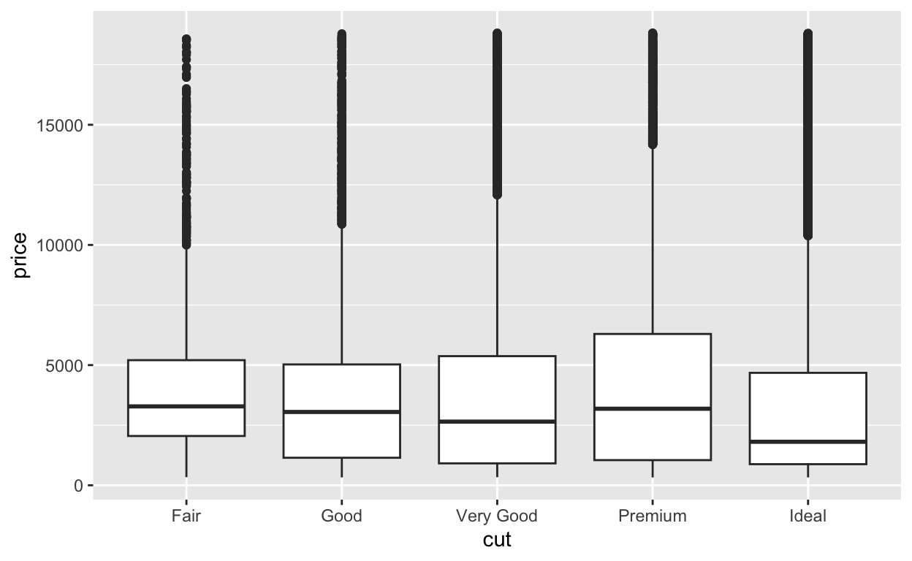
The difference between median prices is hard to see in our plot because each group contains distant outliers.
We can make the difference easier to see by zooming in on the low values of \(y\), where the medians are located. There are two ways to zoom with ggplot2: with and without clipping.
Clipping
Clipping refers to how R should treat the data that falls outside of the zoomed region. To see its effect, look at these plots. Each zooms in on the region where price is between $0 and $7,500.
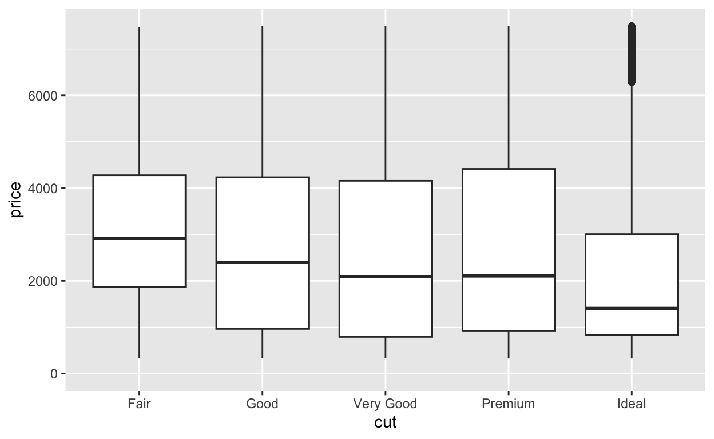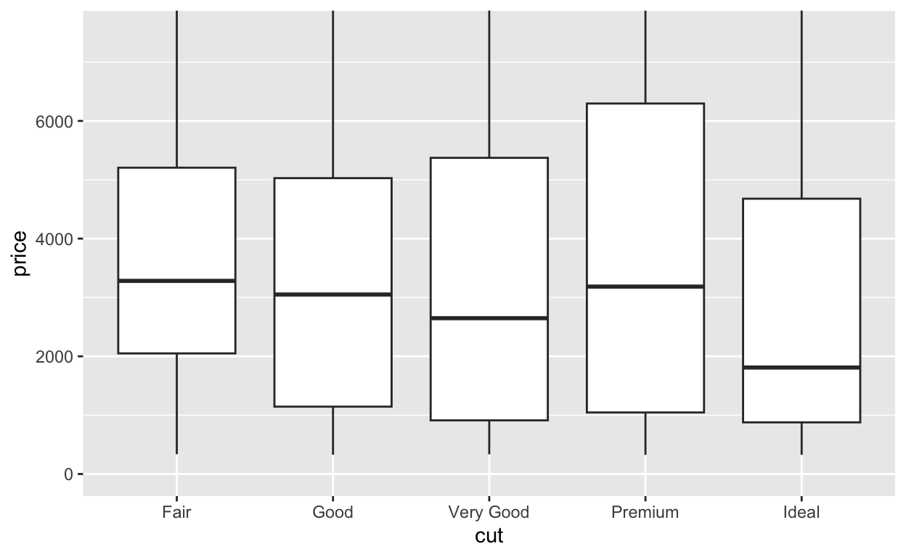
- The plot on the left zooms by clipping. It removes all of the data points that fall outside of the desired region, and then plots the data points that remain.
- The plot on the right zooms without clipping. You can think of it as drawing the entire graph and then zooming into a certain region.
xlim() and ylim()
Of these, zooming by clipping is the easiest to do. To zoom your
graph on the \(x\) axis, add the
function xlim() to the plot call. To zoom on the \(y\) axis add the function
ylim(). Each takes a minimum value and a maximum value to
zoom to, like this
some_plot +
xlim(0, 100)Exercise 1 - Clipping
Use ylim() to recreate our plot on the left from above.
The plot zooms the \(y\) axis from 0 to
7,500 by clipping.
pp + ylim(0, 7500)A caution
Zooming by clipping is a bad idea for boxplots. ylim()
fundamentally changes the information conveyed in the boxplots because
it throws out some of the data before drawing the boxplots. Those aren’t
the medians of the entire data set that we are looking at.
How then can we zoom without clipping?
xlim and ylim
To zoom without clipping, set the xlim and/or ylim arguments of your
plot’s coord_ function. Each takes a numeric vector of
length two (the minimum and maximum values to zoom to).
This is easy to do if your plot explicitly calls a
coord_ function
p + coord_flip(ylim = c(0, 7500))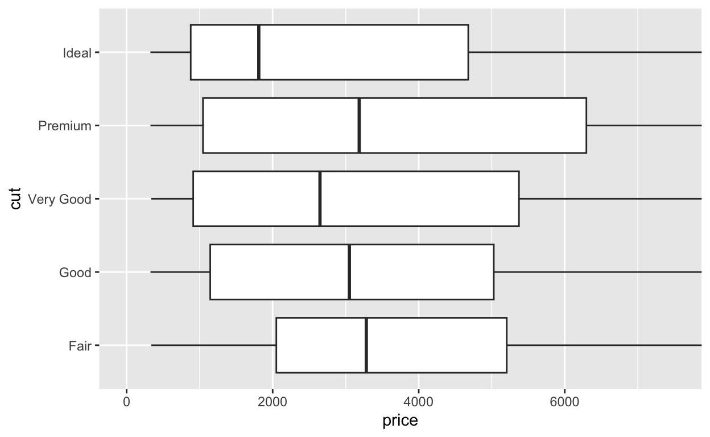
coord_cartesian()
But what if your plot doesn’t call a coord_ function?
Then your plot is using Cartesian coordinates (the default). You can
adjust the limits of your plot without changing the default coordinate
system by adding coord_cartesian() to your plot.
Try it below. Use coord_cartesian() to zoom
p to the region where price falls between 0 and 7500.
p + coord_cartesian(ylim = c(0, 7500))p
Notice that our code so far has used p to make a plot,
but it hasn’t changed the plot that is saved inside of p.
You can run p by itself to get the unzoomed plot.
p
Updating p
I like the zooming, so I’m purposefully going to overwrite the plot
stored in p so that it uses it.
p <- p + coord_cartesian(ylim = c(0, 7500))
p
Labels
labs()
The relationship in our plot is now easier to see, but that doesn’t mean that everyone who sees our plot will spot it. We can draw their attention to the relationship with a label, like a title or a caption.
To do this, we will use the labs() function. You can
think of labs() as an all purpose function for adding
labels to a ggplot2 plot.
Titles
Give labs() a title argument to add a title.
p + labs(title = "The title appears here")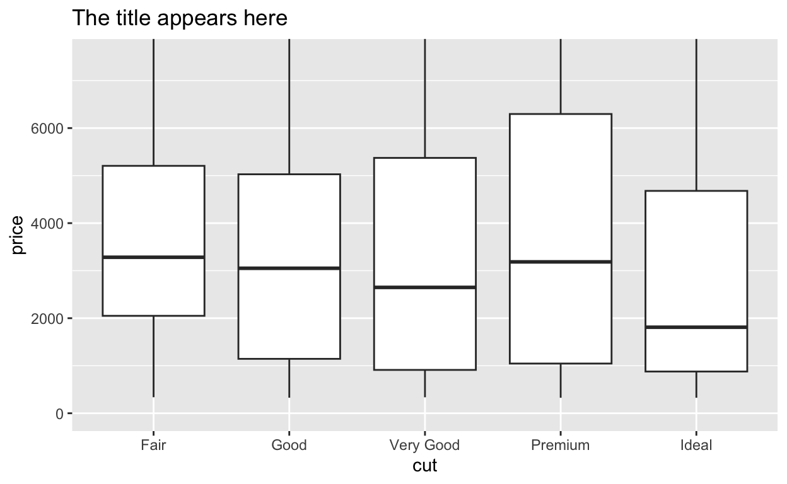
Subtitles
Give labs() a subtitle argument to add a subtitle. If
you use multiple arguments, remember to separate them with a comma.
p + labs(title = "The title appears here",
subtitle = "The subtitle appears here, slightly smaller")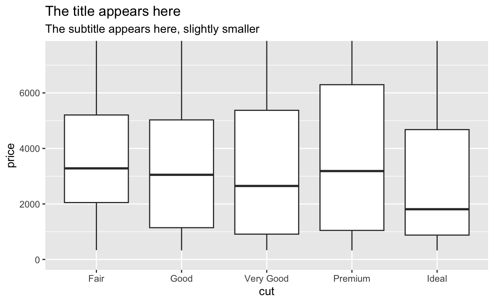
Captions
Give labs() a caption argument to add a caption. I like
to use captions to cite my data source.
p + labs(title = "The title appears here",
subtitle = "The subtitle appears here, slightly smaller",
caption = "Captions appear at the bottom.")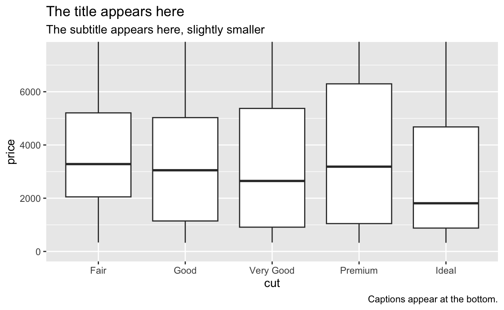
Exercise 2 - Labels
Plot p with a set of informative labels. for learning
purposes, be sure to use a title, subtitle, and caption.
p + labs(title = "Diamond prices by cut",
subtitle = "Fair cut diamonds fetch the highest median price. Why?",
caption = "Data collected by Hadley Wickham")Exercise 3 - Carat size?
Perhaps a diamond’s cut is conflated with its carat size. If fair cut diamonds tend to be larger diamonds that would explain their larger prices. Let’s test this.
Make a plot that displays the relationship between carat size, price, and cut for all diamonds. How do you interpret the results? Give your plot a title, subtitle, and caption that explain the plot and convey your conclusions.
If you are looking for a way to start, I recommend using a smooth line with color mapped to cut, perhaps overlaid on the background data.
ggplot(data = diamonds, mapping = aes(x = carat, y = price)) +
geom_smooth(mapping = aes(color = cut), se = FALSE) +
labs(title = "Carat size vs. Price",
subtitle = "Fair cut diamonds tend to be large, but they fetch the lowest prices for most carat sizes.",
caption = "Data by Hadley Wickham")p1
Unlike p, our new plot uses color and has a legend.
Let’s save it to use later when we learn to customize colors and
legends.
p1 <- ggplot(data = diamonds, mapping = aes(x = carat, y = price)) +
geom_smooth(mapping = aes(color = cut), se = FALSE) +
labs(title = "Carat size vs. Price",
subtitle = "Fair cut diamonds tend to be large, but they fetch the lowest prices for most carat sizes.",
caption = "Data by Hadley Wickham")annotate()
annotate() provides a final way to label your graph: it
adds a single geom to your plot. When you use annotate(),
you must first choose which type of geom to add. Next, you must manually
supply a value for each aesthetic required by the geom.
So for example, we could use annotate() to add text to
our plot.
p1 + annotate("text", x = 4, y = 7500, label = "There are no cheap,\nlarge diamonds")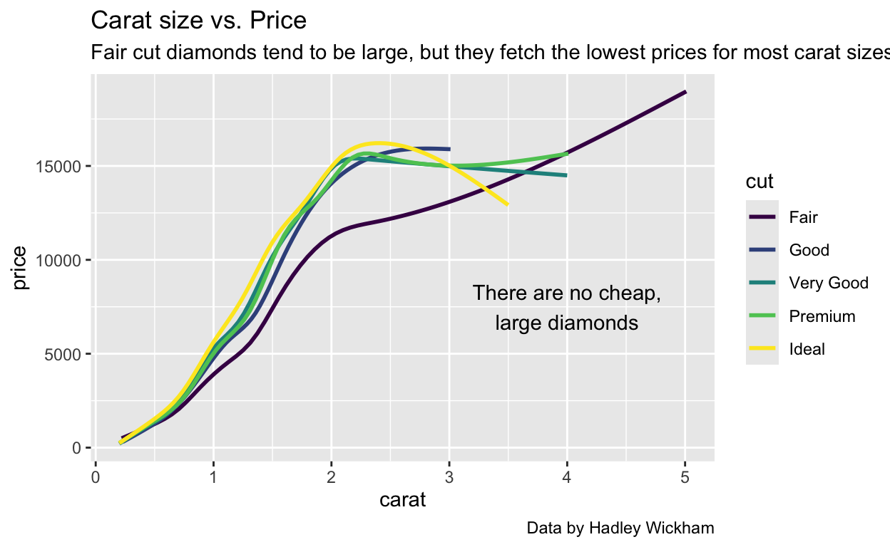
Notice that I select geom_text() with
"text", the suffix of the function name in quotation
marks.
In practice, I find annotate() time consuming to work
with, but you can accomplish quite a lot with annotate() if
you take the time.
Themes
One of the most effective ways to control the look of your plot is with a theme.
What is a theme?
A theme describes how the non-data elements of your plot should look. For example, these two plots show the same data, but they use two very different themes.
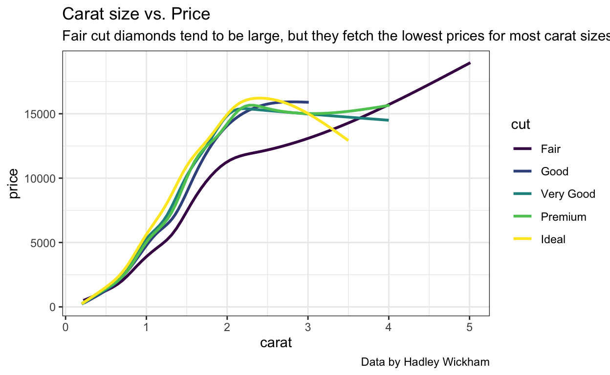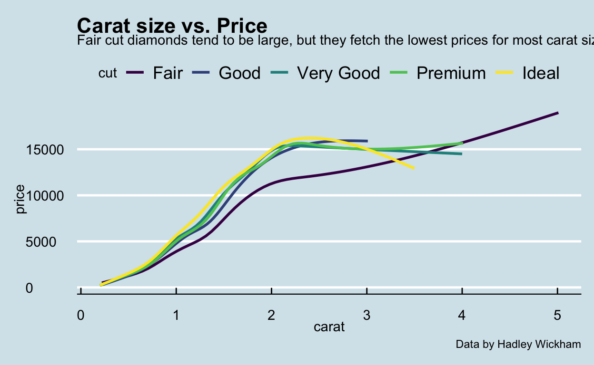
Theme functions
To change the theme of your plot, add a theme_ function
to your plot call. The ggplot2 package provides eight theme functions to
choose from.
theme_bw()theme_classic()theme_dark()theme_gray()theme_light()theme_linedraw()theme_minimal()theme_void()
Use the box below to plot p1 with each of the themes.
Which theme do you prefer? Which theme does ggplot2 apply by
default?
p1 + theme_bw()p1 + theme_classic()ggthemes
If you would like to give your graph a more complete makeover, the ggthemes package provides extra themes that imitate the graph styles of popular software packages and publications. These include:
theme_base()theme_calc()theme_economist()theme_economist_white()theme_excel()theme_few()theme_fivethirtyeight()theme_foundation()theme_gdocs()theme_hc()theme_igray()theme_map()theme_pander()theme_par()theme_solarized()theme_solarized_2()theme_solid()theme_stata()theme_tufte()theme_wsj()
Try plotting p1 with at least two or three of the themes
mentioned above.
p1p1 + theme_wsj()Update p1
If you compare the ggtheme themes to the styles they imitate, you might notice something: the colors used to plot your data haven’t changed. The colors are noticeably ggplot2 colors. In the next section, we’ll look at how to customize this remaining part of your graph: the data elements.
Before we go on, I suggest that we update p1 to use
theme_bw(). It will make our next set of modifications
easier to see.
p1 <- p1 + theme_bw()
p1
Scales
What is a scale?
Every time you map an aesthetic to a variable, ggplot2 relies on a scale to select the specific colors, sizes, or shapes to use for the values of your variable.
A scale is an R function that works like a mathematical function; it maps each value in a data space to a level in an aesthetic space. But it may be easier to think of a scale as a “palette.” When you give your graph a color scale, you give it a palette of colors to use.
Using scales
ggplot2 chooses a pleasing set of scales to use whenever you make a graph. You can change or customize these scales by adding a scale function to your plot call.
For example, the code below plots p1 in greyscale
instead of the default colors.
p1 + scale_color_grey()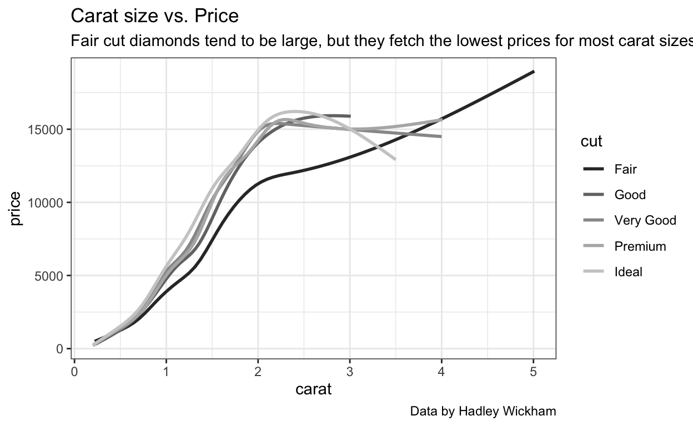
A second example
You can add scales for every aesthetic mapping, including the \(x\) and \(y\) mappings (the code below log transforms the x and y axes).
p1 +
scale_x_log10() +
scale_y_log10()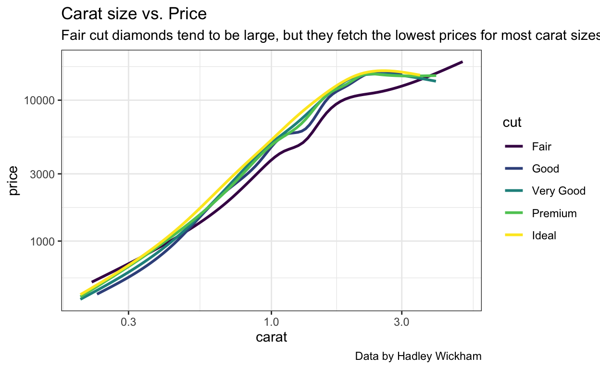
ggplot2 supplies over 50 scales to use. This may seem overwhelming, but the scales are organized according to an intuitive naming convention.
Naming convention
ggplot2 scale functions follow a naming convention. Each function name contains the same three elements in order, separated by underscores:
- The prefix
scale - the name of an aesthetic, which the scale adjusts
(e.g.
color,fill,size) - a unique label for the scale (e.g.
grey,brewer,manual)
scale_shape_manual() and
scale_x_continuous() are examples of the naming scheme.
You can see the complete list of scale names at http://ggplot2.tidyverse.org/reference/. In this tutorial, we will focus on scales that work with the color aesthetic.
Discrete vs. continuous
Scales specialize in either discrete variables or continuous variables. In other words, you would use a different set of scales to map a discrete variable, like diamond clarity, than you would use to map a continuous variable, like diamond price.
scale_color_brewer
One of the most useful color palettes for discrete variables is
scale_color_brewer() (scale_fill_brewer() if
you are working with fill. Run the code below to see the effect of the
scale.
p1 + scale_color_brewer()RColorBrewer
The RColorBrewer package contains a variety of palettes developed by Cynthis Brewer. Each palette is designed to look pleasing as well as to differentiate between the values represented by the palette. You can learn more about the color brewer project at colorbrewer2.org.
Altogether, the RColorBrewer package contains 35 palettes. You can
see each palette and its name by running
RColorBrewer::display.brewer.all(). Try it below.
RColorBrewer::display.brewer.all()Brewer palettes
By default, scale_color_brewer() will use the “Blues”
palette from the RColorBrewer package. To use a different RColorBrewer
palette, set the palette argument of scale_color_brewer()
to one of the RColorBrewer palette names, surrounded by quotation marks,
e.g.
p1 + scale_color_brewer(palette = "Purples")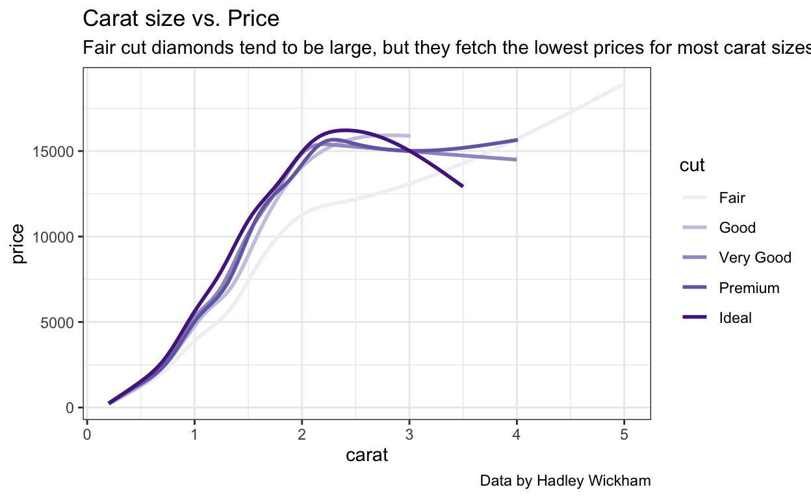
Exercise - scale_color_brewer()
Recreate the graph below, which uses a different palette from the RColorBrewer package.
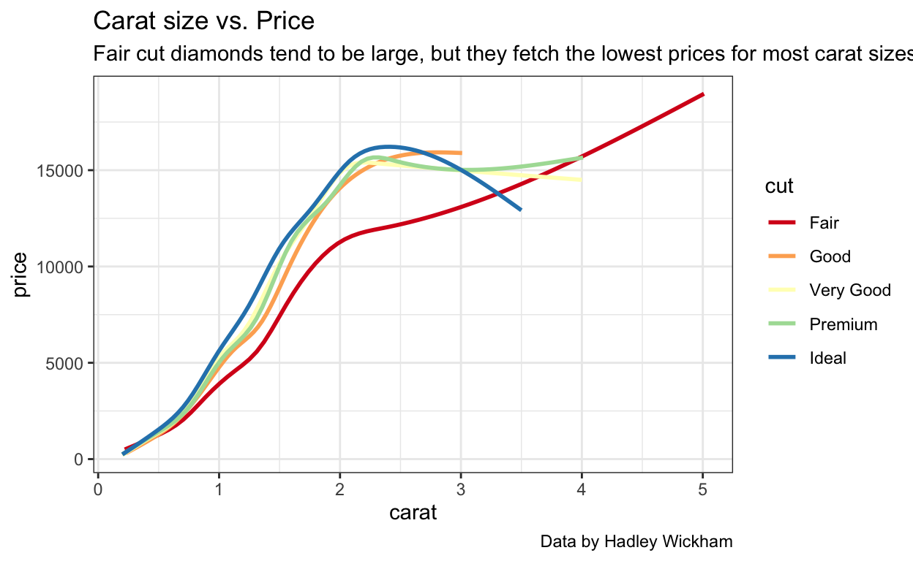
p1 + scale_color_brewer(palette = "Spectral")Continuous colors
scale_color_brewer() works with discrete variables, but
what if your plot maps color to a continuous variable?
Since we do not have a plot that applies color to a continuous variable, let’s make one.
p_cont <- ggplot(data = mpg) +
geom_jitter(mapping = aes(x = displ, y = hwy, color = hwy)) +
theme_bw()
p_cont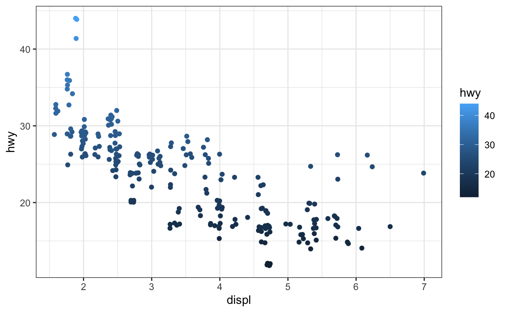
Discrete vs. continuous in action
If we apply scale_color_brewer() to our new plot, we get
an error message that confirms what you know: you cannot use a scale
that is built for discrete variables to customize the mapping to a
continuous variable.
p_cont + scale_color_brewer()## Error in `scale_color_brewer()`:
## ! Continuous values supplied to discrete scale.
## ℹ Example values: 29, 29, 31, 30, and 26distiller
Luckily, scale_color_brewer() has a comes with a
continuous analogue named scale_color_distiller() (also
scale_fill_distiller()).
Use scale_color_distiller() just as you would
scale_color_brewer(). scale_color_distiller()
will take any RColorBrewer palette, and interpolate between colors as
necessary to provide an entire continuous range of colors.
So for example, we could reuse the Spectral palette in our continuous plot
p_cont + scale_color_distiller(palette = "Spectral")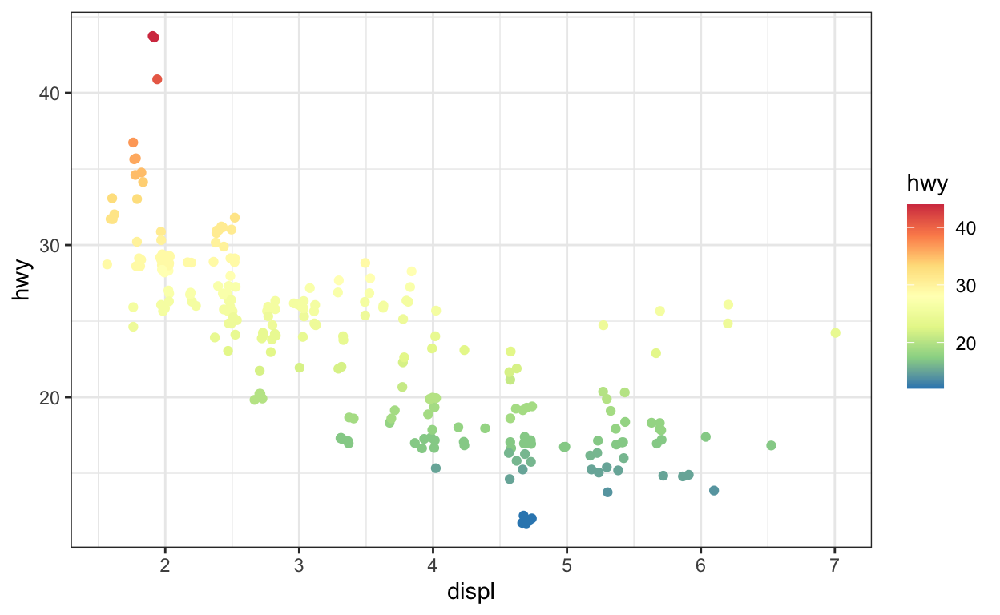
Exercise - scale_color_distiller()
Recreate the graph below, which uses a different palette from the RColorBrewer package.
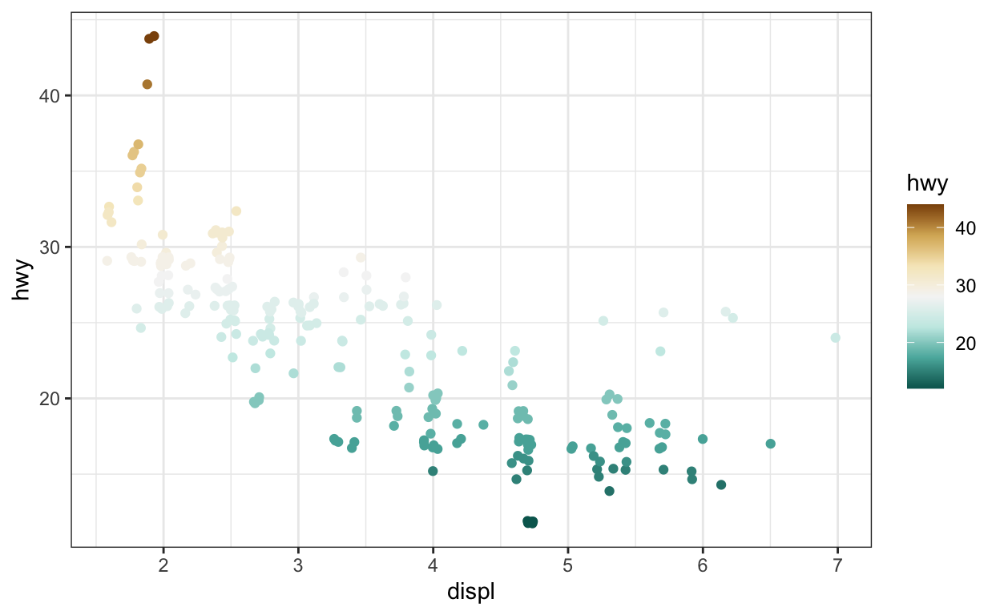
p_cont + scale_color_distiller(palette = "BrBG")viridis
The viridis package contains a collection of very good looking color palettes for continuous variables. Each palette is designed to show the gradation of continuous values in an attractive, and perceptionally uniform way (no range of values appears more important than another). As a bonus, the palettes are both color blind and black and white printer friendly!
To add a viridis palette, use scale_color_viridis() or
scale_fill_viridis(), both of which come in the viridis
package.
p_cont + scale_color_viridis()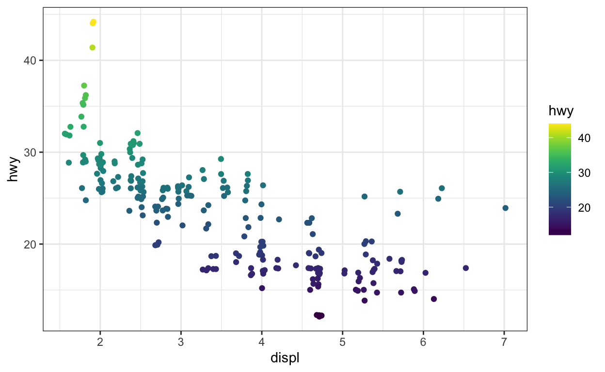
viridis options
Altogether, the viridis package comes with four color palettes, named magma, plasma, inferno, and viridis.
However, you do not select the palettes by name. To select a viridis
color palette, set the option argument of
scale_color_viridis() to one of "A" (magma),
"B" (plasma), "C" (inferno), or
"D" (viridis).
Try each option with p_cont below. Determine which is
the default.
p_cont + scale_color_viridis(option = "D")Legends
Customizing a legend
The last piece of a ggplot2 graph to customize is the legend. When it comes to legends, you can customize the:
- position of the legend within the graph
- the “type” of the legend, or whether a legend appears at all
- the title and labels in the legend
Customizing legends is a little more chaotic than customizing other parts of the graph, because the information that appears in a legend comes from several different places.
Positions
To change the position of a legend in a ggplot2 graph add one of the below to your plot call:
+ theme(legend.position = "bottom")+ theme(legend.position = "top")+ theme(legend.position = "left")+ theme(legend.position = "right")(the default)
Try this now. Move the legend in p_cont to the bottom of
the graph.
p_cont + theme(legend.position = "bottom")theme() vs. themes
Theme functions like theme_grey() and
theme_bw() also adjust the legend position (among all of
the other details they orchestrate). So if you use
theme(legend.position = "bottom") in your plots, be sure to
add it after any theme_ functions you call, like
this
ggplot(data = mpg) +
geom_jitter(mapping = aes(x = displ, y = hwy, color = hwy)) +
theme_bw() +
theme(legend.position = "bottom")If you do this, ggplot2 will apply all of the settings of
theme_bw(), and then overwrite the legend position setting
to “bottom” (instead of vice versa).
Types
You may have noticed that color and fill legends take two forms. If you map color (or fill) to a discrete variable, the legend will look like a standard legend. This is the case for the bottom legend below.
If you map color (or fill) to a continuous legend, your legend will look like a colorbar. This is the case in the top legend below. The color bar helps convey the continuous nature of the variable.
Changing type
You can use the guides() function to change the type or
presence of each legend in the plot. To use guides(), type
the name of the aesthetic whose legend you want to alter as and
argument name. Then set it to one of
"legend"- to force a legend to appear as a standard legend instead of a colorbar"colorbar"- to force a legend to appear as a colorbar instead of a standard legend. Note: this can only be used when the legend can be printed as a colorbar (in which case the default will be colorbar)."none"- to remove the legend entirely. This is useful when you have redundant aesthetic mappings, but it may make your plot indecipherable otherwise.
p_legend + guides(fill = "legend", color = "none")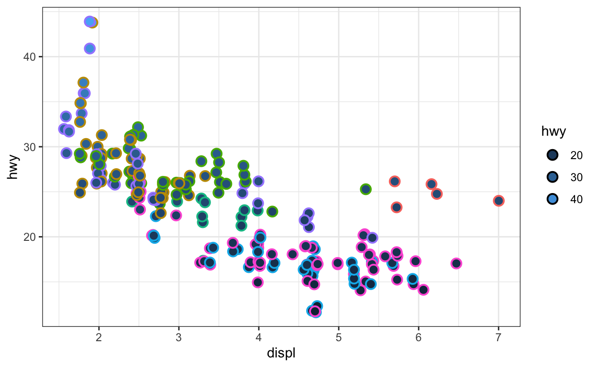
Exercise - guides()
Use guides() to remove each legend from the
p_legend plot.
p_legend + guides(fill = "none", color = "none")Labels
To control the title and labels of a legend, you must turn to the
scale_ functions. Each scale_ function takes a
name and a labels argument, which it will use to build the legend
associated with the scale. The labels argument should be a vector of
strings that has one string for each label in the default legend.
So for example, you can adjust the legend of p1 with
p1 + scale_color_brewer(name = "Cut Grade", labels = c("Very Bad", "Bad", "Mediocre", "Nice", "Very Nice"))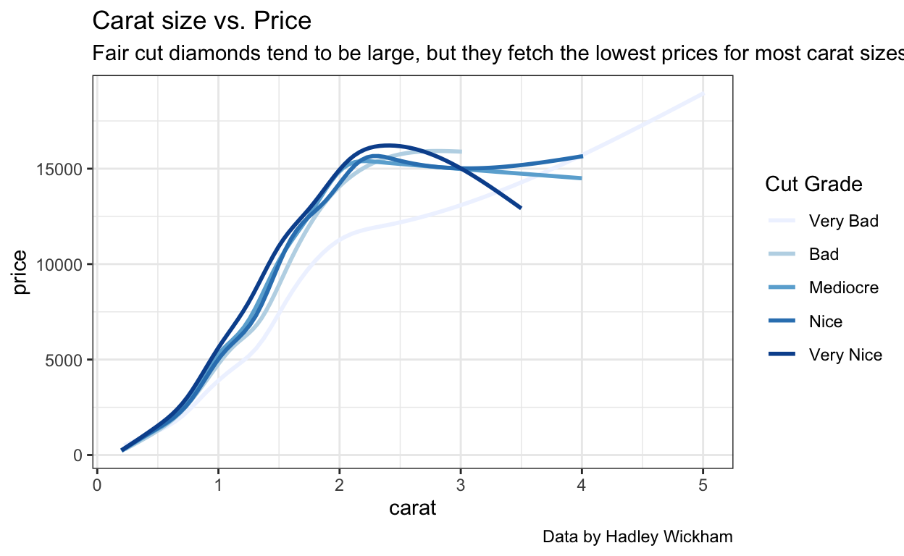
What if?
This is handy, but it raises a question: what if you haven’t invoked
a scale_ function to pass labels to? For example, the graph
below relies on the default scales.
Default scales
In this case, you need to identify the default scale used by the plot and then manually add that scale to the plot, setting the labels as you do.
For example, our plot above relies on the default color scale for a
discrete variable, which happens to be
scale_color_discrete(). If you know this, you can relabel
the legend like so:
p1 + scale_color_discrete(name = "Cut Grade", labels = c("Very Bad", "Bad", "Mediocre", "Nice", "Very Nice"))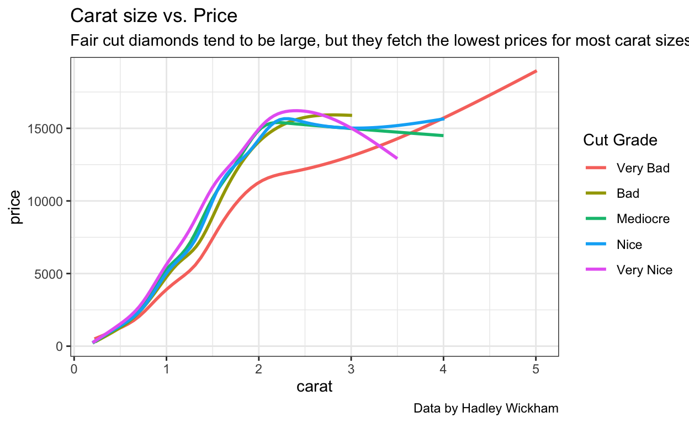
Scale defaults
As you can see, it is handy to know which scales a ggplot2 graph will use by default. Here’s a short list.
| aesthetic | variable | default |
|---|---|---|
| x | continuous | scale_x_continuous() |
| discrete | scale_x_discrete() | |
| y | continuous | scale_y_continuous() |
| discrete | scale_y_discrete() | |
| color | continuous | scale_color_continuous() |
| discrete | scale_color_discrete() | |
| fill | continuous | scale_fill_continuous() |
| discrete | scale_fill_discrete() | |
| size | continuous | scale_size() |
| shape | discrete | scale_shape() |
Exercise - Legends
Use the list of scale defaults above to relabel the legend in
p_cont. The legend should have the title “Highway MPG”.
Also place the legend at the top of the plot.
p_contp_cont + scale_color_continuous(name = "Highway MPG") + theme(legend.position = "top")Axis labels
In ggplot2, the axes are the “legends” associated with the \(x\) and \(y\) aesthetics. As a result, you can control axes titles and labels in the same way as you control legend titles and labels:
p1 + scale_x_continuous(name = "Carat Size", labels = c("Zero", "One", "Two", "Three", "Four", "Five"))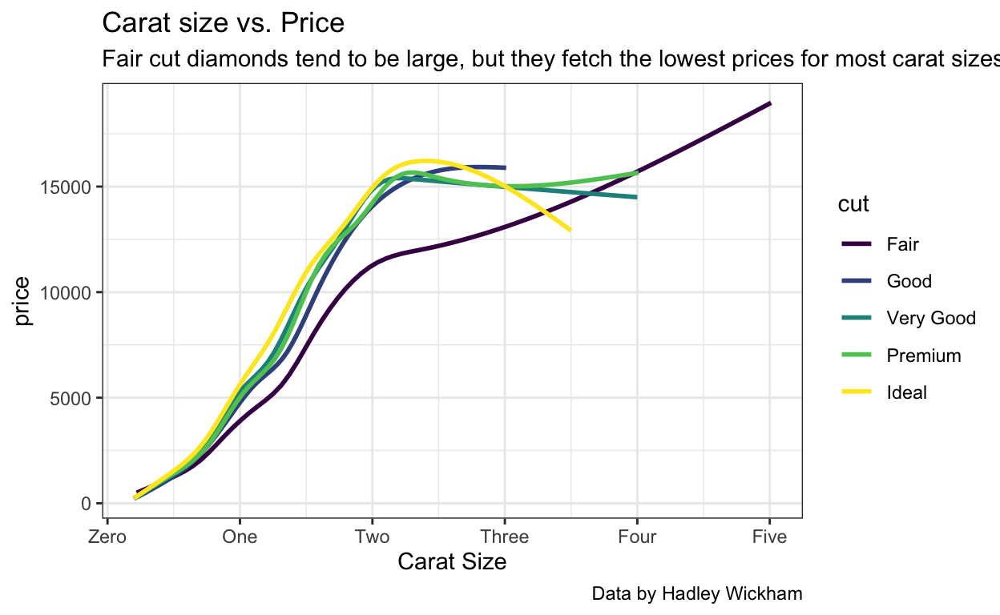
Quiz
In this tutorial, you learned how to customize the graphs that you make with ggplot2 in several ways. You learned how to:
- Zoom in on regions of the graph
- Add titles, subtitles, and annotations
- Add themes
- Add color scales
- Adjust legends
To cement your skills, combine what you’ve learned to recreate the plot below.
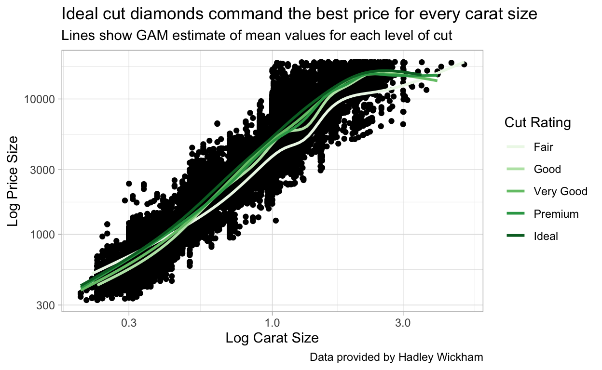
ggplot(data = diamonds, mapping = aes(x = carat, y = price)) +
geom_point() +
geom_smooth(mapping = aes(color = cut), se = FALSE) +
labs(title = "Ideal cut diamonds command the best price for every carat size",
subtitle = "Lines show GAM estimate of mean values for each level of cut",
caption = "Data provided by Hadley Wickham",
x = "Log Carat Size",
y = "Log Price Size",
color = "Cut Rating") +
scale_x_log10() +
scale_y_log10() +
scale_color_brewer(palette = "Greens") +
theme_light()